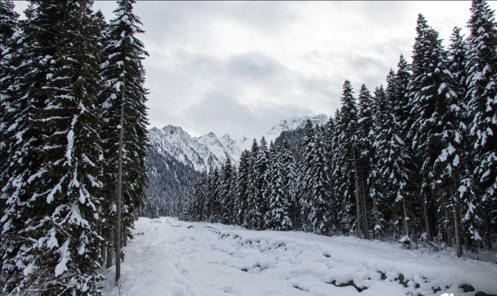
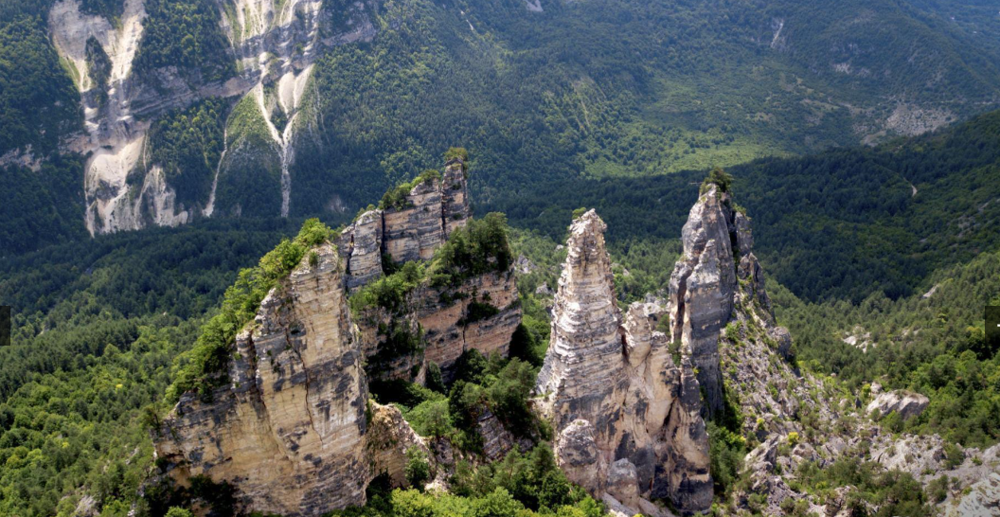

რაჭა საქართველოს ისტორიულ-გეოგრაფიული მხარეა, რომელიც დასავლეთ საქართველოს ჩრდილო-აღმოსავლეთ ნაწილში მდებარეობს. იგი ძალიან მდიდარია კულტურული ძეგლებითა და მრავალფეროვანი ბუნებით. რაჭაში მდებარეობს უხვი და დახვეწილი ჩუქურთმებით სახელგანთქმული, ქართული ხუროთმოძღვრების შედევრი, ნიკორწმინდა. საინტერესო კულტურის ნიმუშების გარდა ამ მხარეში დატკბებით გრილი ტყეებით, ალპური ტბებით, ულამაზესი ჩანჩქერებითა და მომნუსხველი ხედებით.
რაჭა დიდი ისტორიის მქონე მხარეა. ადამიანის ცხოვრების კვალი აქ ჯერ კიდევ ბრინჯაოს ხანაში დასტურდება. ადრეულ პერიოდში რაჭა ლეჩხუმთან ერთად ქმნიდა თაკვერს. თაკვერი დამოწმებულია VII საუკუნის წყაროებში. თაკვერს გამოეყო რაჭა და ეს სახელწოდება შემორჩა მხოლოდ ლეჩხუმს. X საუკუნის ბოლოს შეიქმნა რაჭის საერისთავო, რომლის პირველი ერისთავი რატი ბაღვაში იყო. XIII საუკუნის 80-იან წლებში დავით ნარინმა გააუქმა საერისთავო და ეს ტერიტორია სამეფო მამულებად გამოაცხადა. კახაბერისძეთა საგვარეულო, როგორც ჩანს, ამოწყდა. XIV საუკუნის 30-იან წლებში, შემდგომში საერისთავოს აღდგენის შემდეგ ერისთავის ტიტულს ჭარელიძეთა, უფრო მოგვიანებით კი, 1488 წლიდან, ჩხეტიძეთა საგვარეულო ატარებდა. XV საუკუნის მეორე ნახევარში საქართევლოს სამეფო-სათავროებად დაშლის შემდეგ რაჭის საერისთავო სამეგრელოს შემადგენლობაში შევიდა. მეთხუთმეტე საუკუნის 30-იან წლებში იმერეთის მეფემ ბაგრატ მესამემ რაჭის ერისთავებს მინდაციხე-დარბაზი გადასცა და იმერეთის შექმნილი სამეფოს ახლად შექმნილი სადროშოების, მასამო-რაჭის სადროშოს, სარდლობა ჩააბარა. XV-XVII საუკუნეების რაჭის საერისთაოში იმერეთის მეფეები ფლობდნენ ყმა მამულს. 1789 წელს იმერეთში გამეფდა სოლომონ II, რომელმაც საბოლოოდ გაუქმა რაჭის საერისთავო. იმერეთის სამეფოს რუსეთის იმპერიასთან შეერთების შემდეგ, რაჭის ტერიტორია ქმნიდა ჯერ ოკრუგს, შემდეგ - მაზრას. რაჭის მხარეს სხვადასხვა დროს განაგებდა რამდენიმე თავადური საგვარეულო: წულუკიძე, იაშვილი, ჯაფარიძე, ინასარიძე, ლაშხისშვილი. დღესდღეობით რაჭა რაჭა-ლეჩხუმისა და ქვემო სვანეთის მხარის შემადგენლობაში შედის.
რაჭული კულტურა მრავალფეროვანი და საინტერესოა თავისი ფოლკლორით, სამზარეულოთი და ტრადიციებით. ამ მხარეში შემორჩენილია ძველი სახალხო დღესასწაულები, როგორიცაა ათაგენობა, ბოსლობა და ა.შ. გამორჩეულია რაჭული ფოლკლორი და ბევრ მკვლევარს აღუნიშნავს რაჭის მუსიკალურობა. ცნობილი რაჭული სიმღერებია "ქვედრულა", "რაშოვდა", "მაღლა მთას მოდგა" და სხვა. შემორჩენილია ასევე სხვადასხვა თემატიკის რაჭული ხალხური პოეზიის ნიმუშები. რაჭაში მრავლად ვხვდებით თქმულებებს სოფლების დაარსებასა თუ მათი სახელების ეტიმოლოგიის შესახებ, მაგალითად, სოფელი ღების დაარსებას ხალხური თქმულება ლეჩხუმიდან გამოქცეულ ვინმე მღებავს მიაწერს. რაჭა განთქმულია დურგლობით. საქართველოს ბევრ კუთხეში ნახავთ რაჭველების აშენებულ ოდა სახლებს, რომლებიც ულამაზესი ჩუქურთმებით გამოირჩევა.  რაჭული სამზარეულო უგემრიელესია და შქმერულით, ქოთნის ლობიოთი, რაჭული ლორითა და რაჭული ლობიანით ნამდვილად მიიპყრობს გურმანთა ყურადღებას. რეგიონში განვითარებულია მეღვინეობა, განსაკუთრებულია უმაღლესი ხარისხის, წითელი, ბუნებრივად ნახევრად ტკბილი ღვინო ხვანჭკარა.
რაჭა საქართველოს ისტორიულ-გეოგრაფიული მხარეა. იგი მდებარეობს დასავლეთ საქართველოს ჩრდილო-აღმოსავლეთ ნაწილში, მდინარე რიონისა და მისი შენაკადების ხეობაში. ჩრდილოეთით რაჭას ესაზღვრება ოსეთი, ჩრდილო-დასავლეთით - ქვემო სვანეთი, სამხრეთით - იმერეთი, აღმოსავლეთით - შიდაქართლი, დასავლეთით - ლეჩხუმი. ისტორიულ-გეოგრაფიულად რაჭა სამ კუთხედ იყოფოდა: მთის რაჭა, ზემორაჭა და ქვემორაჭა. ამჟამად რაჭა შედის ონისა და ამბროლაურის მუნიციპალიტეტებად იყოფა. ამბროლაურის მუნიციპალიტეტი კავკასიონის სისტემის სამხრეთი ფერდობის ზონაში მდებარეობს. მისი სამხრეთ-აღმოსავლეთი საზღვარი რაჭის ქედს გასდევს, ჩრდილოეთით კი გაწოლილია ლეჩხუმის ქედი. ონის მუნიციპალიტეტს აღმოსავლეთით ესაზღვრება ჯავის, დასავლეთით ამბროლაურისა და ლენტეხის, სამხრეთით საჩხერის მუნიციპალიტეტები, ჩრდილოეთით ყაბარდო-ბალყარეთისა და ჩრდილოეთ ოსეთის რესპუბლიკები. რაჭის ტერიტორიაზე მიედინება მდინარე რიონი და მისი შენაკადები. ამბროლაურის მუნიციპალიტეტში მდებარეობს შაორის წყალსაცავი, რომელიც უდიდესი წყალსაცავია რაჭა-ლეჩხუმისა და ქვემო სვანეთის მხარეში.  რაჭაში ზღვის დონიდან 2000 მ სიმაღლეზე ნოტიო ჰავაა, ზამთარი ცივია და გრძელი, ზაფხული - ხანმოკლე, თბილი და ზოგჯერ ცხელიც. რაჭის ყველაზე მაღალ ადგილებში (2000 მეტრის ზემოთ) ნამდვილ ზაფხულს მოკლებული ნოტიო და ნივალური ჰავაა.
რაჭაში მრავლადაა სხვადასხვა პერიოდის მნიშვნელოვანი კულტურული ძეგლები. აქ ნახავთ უხვი და დიდებული მორთულობებით შემკულ ტაძრებს, საინტერესო ფრესკებს, ქართული ხუროთმოძღვრების გამორჩეულ ნიმუშებს, რომლებიც ჰარმონიულად ერწყმიან რაჭის ულამაზეს ბუნებას. სუფთა ჰაერი, სიმწვანეში ჩაფლული ჩანჩქერები, კლდეებში კრისტალივით ჩაბნეული ალპური ტბები, მყინვარები და აყვავებული მდელოები კი ნამდვილ სამოთხეს ქმნის და ხეტიალის მოყვარულებს გულგრილს არ დატოვებს.